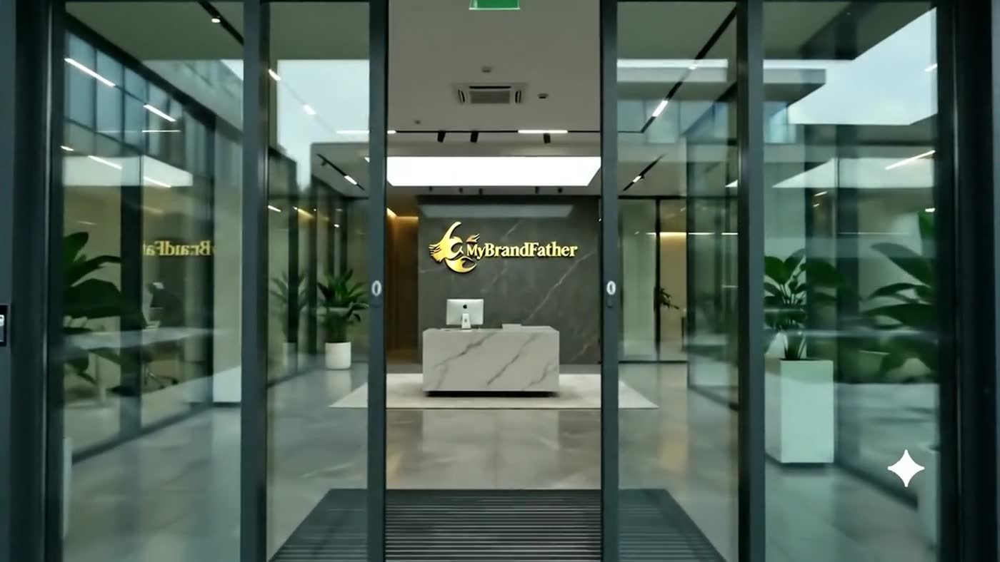

MBF Journal
A Website Is Not a Brochure. It Is Your Flagship.
Walk into a flagship store — Apple on Fifth Avenue, Aesop on any corner it chooses — and pay attention to what happens in the first ten seconds. Nothing is asked of you. Nobody thrusts a flyer at your chest. The space itself makes the argument: the materials, the light, the proportions, the restraint. By the time a person speaks to you, you have already decided what this brand costs, and you decided it with your senses rather than your reason.
Your website performs the same ritual for every prospect you will ever have, and it performs it before you know they exist. The only question is whether it performs the ritual deliberately or by accident. This essay is about the difference — and about what it takes, concretely, to build the deliberate kind.
The brochure problem
Most business websites are brochures: a stock hero image, three feature columns, a testimonial strip, a contact form. Structurally there is nothing wrong with any of it. Emotionally there is nothing right. A brochure informs; a flagship convinces. And the difference is not budget — the internet is full of expensive brochures — it is intent. A flagship is designed backward from a feeling the visitor should have, and every element on the page is either building that feeling or diluting it. A brochure is designed forward from a sitemap, and it shows.
The brochure approach persists because it feels safe. It resembles what competitors have, it offends nobody, and it can be approved by committee without anyone having to defend a point of view. That safety is the trap. A website that resembles every competitor has volunteered to be compared on the only dimension left: price. The brochure does not just fail to make your argument — it quietly makes the discount aisle's argument for you.
Visitors do not remember what your website said. They remember what it felt like to stand in it.
What a flagship actually does
A flagship store is an economic instrument with a specific job: it sets the price expectation for the entire brand, including every product sold elsewhere. The store on Fifth Avenue makes the phone bought in a suburban mall feel like a premium object. Websites work identically. The prospect who spends ninety seconds inside a crafted digital environment arrives at the sales conversation with the price question already half-answered — in your favor. The prospect who spends ninety seconds inside a template arrives anchored to whatever the cheapest lookalike charges.
This is why the website is the highest-leverage brand investment most businesses will ever make. It is the one environment every prospect walks through, the one salesperson who talks to all of them, and the only impression you control completely.
The anatomy of flagship craft
The feeling is not produced by magic. It is produced by five disciplines applied together, and the absence of any one of them is perceptible even to visitors who could never name it.
Motion with purpose. In a flagship, things move the way objects move in the physical world: with weight, with easing, without hurry. A slow reveal as a section enters. A hover state that responds like material rather than a light switch. Nothing bounces, nothing spins, nothing performs enthusiasm. Motion in a premium environment is choreography, and its job is to make the visitor feel the presence of a designing hand — the same signal a perfectly lit shelf sends in a store.
Typography with conviction. One serif with genuine character for the moments that matter. One workhorse sans for everything else. Nothing more. Type is the voice of the page, and a page set in the same fonts as ten thousand templates speaks in the same voice as ten thousand templates. The businesses that feel expensive online almost always sound expensive first, and they sound it typographically.
Space as a material. The emptiness around a headline is doing more selling than a fourth paragraph would. Generous margins, unhurried sections, one idea per screen — these read as confidence because they are literally expensive: they spend scroll depth, the digital equivalent of floor space, on nothing but composure. Cramming reads as anxiety. Anxiety reads as cheap.
Speed as courtesy. Luxury is never kept waiting, and neither is a visitor forming a first impression. A flagship that loads slowly is a contradiction the brain resolves instantly and unflatteringly. Performance is not an engineering afterthought; it is part of the manners of the brand.
One clear next step. A flagship store has one register, not a gauntlet of kiosks. The crafted website makes a single, unhurried invitation — a conversation, a consultation, a visit to the work — and it makes that invitation the calmest, most confident element on the page. Five competing calls to action are the digital equivalent of a salesperson following you through the store.


The ten-second test
Here is the audit, and it costs nothing. Open your website next to the two competitors you most often lose deals to. Say nothing, read nothing — just look at each for ten seconds, the way a stranger does. Then answer one question honestly: could a person with no context tell which of these companies charges the most?
If the answer is no, the premium position in your market is unclaimed, at least online. And unclaimed positions do not stay unclaimed. Someone in your category will eventually build the environment that claims it, and from that day forward every comparison a prospect makes will be run against their standard.
The objections, taken seriously
"Our buyers are practical people. They do not care about design." Practical buyers care intensely about risk, and design is how they read for it — they simply do not use the word. The contractor's client who says the website "looked professional" is reporting a risk assessment, not an aesthetic one. Nobody is outside this. The audiences most likely to claim immunity to design are often the ones most decisively moved by it, precisely because they believe they are judging on substance while their first impression was formed in the first ten seconds like everyone else's.
"We get our business from referrals." Referred prospects visit the website too — to confirm the referral. A flagship turns a warm introduction into a closed conversation. A brochure turns it into "let me get two more quotes." The referral does not replace the first impression; it raises the stakes of it.
"We tried investing in the website before and saw nothing." Almost always, what was tried was a bigger brochure: more pages, more features, a fresher template. Volume is not the variable. The variable is whether the environment was designed backward from a feeling — and that is a different project, done by different people, measured a different way.
A flagship is maintained, not launched
Physical flagships employ people whose entire job is upkeep: the windows are re-dressed for the season, the displays rotate, the burnt-out bulb never survives the morning walk-through. Digital flagships require the same discipline, and this is where most ambitious redesigns quietly die. The site launches at its best and is then left to age: the copyright year drifts, the featured work stops being the best work, the announcement bar celebrates something from two winters ago. Visitors register staleness the way shoppers register dust — instantly, and as a statement about the whole operation.
The maintenance burden is smaller than it sounds, provided it is designed for. A flagship needs a quarterly walk-through with fresh eyes, one section built to carry current work without engineering effort, and a standing rule that anything no longer true comes down the day it stops being true. An hour a month protects the entire investment. The businesses that skip it are not saving the hour; they are amortizing their flagship back into a brochure.
Measurement belongs to the maintenance ritual too, but measure the right things. A flagship's job is not raw traffic; it is the quality of the conversations that begin after someone has stood in it. Watch the questions prospects arrive with, the deals where price resistance quietly softened, the referrals that closed without a second meeting. Those are the metrics of an environment doing its work — and they show up in the sales ledger long before they show up in any analytics dashboard.
Where to begin
Not with a redesign brief. With a positioning decision: what should a stranger believe about this company after ten silent seconds? Price tier, personality, standard of care — write it down in one sentence. Then audit the current site against that sentence, screen by screen, and be ruthless about the verdict. Most businesses discover their website is making an argument, fluently and consistently. It is simply not the argument they would have chosen.
The web rewards the businesses that treat it as real estate rather than paperwork. A brochure is filed and forgotten. A flagship is visited, remembered, and — this is the entire point — walked out of with the price question already answered.